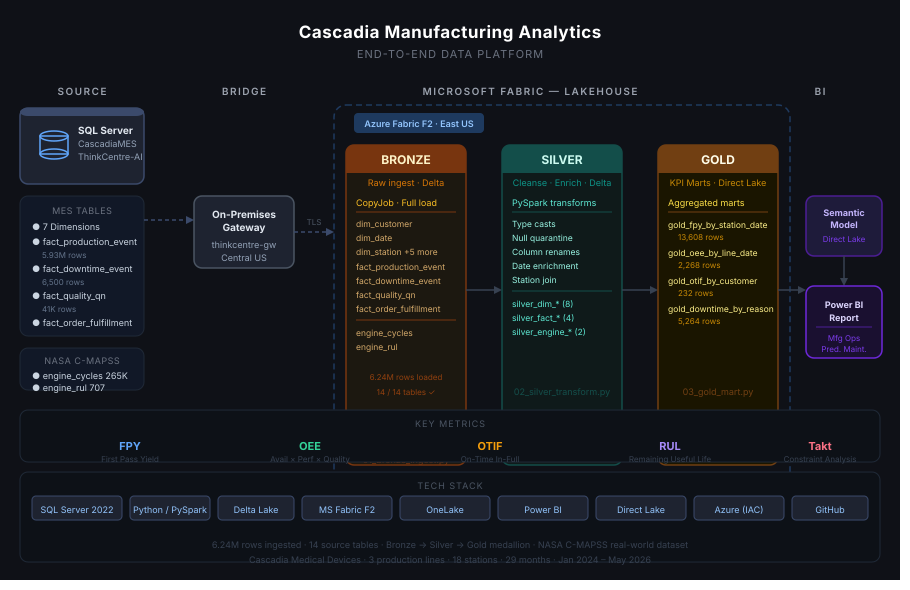

Cascadia Pharmacy
GLP-1 drug spend growth and immunization coverage analytics on real CMS + CDC public data.
Healthcare / Pharmacy Analytics
Cascadia Pharmacy
Turning messy federal public data — CMS Part D suppressed cells, CDC VaxView age-band mismatches — into a clean star schema and an interview-ready GLP-1 growth story.
Overview
TODO (Cowork — Overview): 2–3 sentences: pharmacy analytics domain (CVS-relevant), the business question (GLP-1 cost trajectory + immunization access disparities), and the headline skill (messy public-data cleaning + SQL Server star schema applied to real CMS/CDC data).
Business Problem
TODO (Cowork — Business Problem): Frame through a CVS lens: Medicare Part D drug spend trends (especially GLP-1s / obesity drugs) and adult immunization coverage gaps matter directly to a pharmacy chain’s formulary strategy and immunization programs. What would a CVS analytics leader want to answer from this data? (E.g., “Which drugs drove the largest spend increases? Which states have the lowest flu vaccination rates?”)
Architecture

Source layer: CascadiaRx SQL Server star schema — 5 dimension tables + 2 fact tables.
fact_partd_drug_spend(339 rows, grain: drug × year 2020–2024, CMS Part D data)fact_immunization_coverage(24,596 rows, grain: vaccine × geography × demographic × season, CDC VaxView)
Medallion pipeline: Bronze → Silver → Gold notebooks in Microsoft Fabric Lakehouse (Phase 2, in build).
Semantic model + report: Power BI — GLP-1 Growth Story page + Immunization Coverage & Access page (Phase 2, in build).
Data Sources
| Source | Type | Rows | Notes |
|---|---|---|---|
| CMS Medicare Part D Spending by Drug | Federal (CMS) | 14,536 raw → 339 filtered | Wide-format CSV, 2020–2024 annual columns; filtered to antidiabetic/obesity drug classes |
| CDC FluVaxView | Federal (CDC / Socrata) | 100K raw → 24,596 filtered | Adult flu vaccination coverage by state × age × season |
| CDC RSVVaxView | Federal (CDC) | TBD | Adult RSV coverage — manual download pending |
| CDC COVIDVaxView | Federal (CDC) | TBD | Adult COVID coverage — correct dataset endpoint pending |
Attribution: - CMS Part D data: Centers for Medicare & Medicaid Services — public domain federal data. - CDC VaxView: Centers for Disease Control and Prevention — public domain federal data.
Headline Skill: Messy Public-Data Cleaning
TODO (Cowork — Headline Skill): This is the CVS-interview-ready centerpiece. Draft 2–3 paragraphs covering: 1. CMS suppression handling — blank cells in the wide-format CSV mean “suppressed” (beneficiary count < 11), not zero. Explain how the pipeline preserves suppressed_flag=1 rather than zero-filling, and why this matters for accurate trend analysis. 2. Wide-to-long pivot — CMS data arrives with year columns (Tot_Spndng_2020 through Tot_Spndng_2024) on a single row per drug. Explain the pivot logic and drug classification approach. 3. CDC column mismatch + age-band normalization — FluVaxView uses non-standard column names and “NR †” for not-reportable cells. How the pipeline handles these without silently defaulting suppressed estimates to zero. Make it interview-conversational: “Here’s the dirt I found, here’s why it matters, here’s what I did.”
GLP-1 Headline Numbers
| Drug | 2020 Part D Spend | 2024 Part D Spend | Growth |
|---|---|---|---|
| Ozempic (semaglutide) | $1.46B | $12.97B | +788% |
| Mounjaro (tirzepatide) | — | $5.57B | New 2022 |
| Wegovy (semaglutide) | — | $2.27B | New 2021 |
Source: CMS Medicare Part D Spending by Drug (public domain federal data). All figures are real CMS-reported values; no fabrication.
The Report
TODO (Aaron — Report screenshots, Phase 2): Once the Power BI report is built, add screenshots to assets/img/pharmacy-report-*.png. Suggested: - pharmacy-report-glp1-growth.png — GLP-1 spend trend chart (2020–2024) - pharmacy-report-imm-coverage.png — Immunization coverage map by state
Then replace this block:

Optionally add a Loom walkthrough video and/or Power BI embedded “View live report” button.
Tech Stack
SQL Server 2019 T-SQL Python CMS Part D Data CDC VaxView Microsoft Fabric PySpark Power BI DAX PowerShell
Links
- Build Repository — SQL DDL, Python acquisition/staging scripts, run_phase1.ps1
- Domain Explainer — schema decisions, messy-data showcase table, interview talking points
- Cascadia Architecture Overview